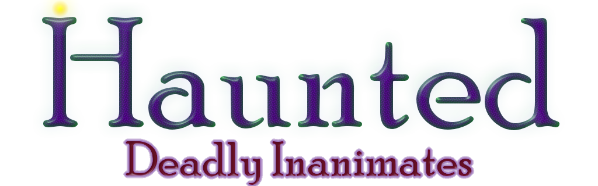
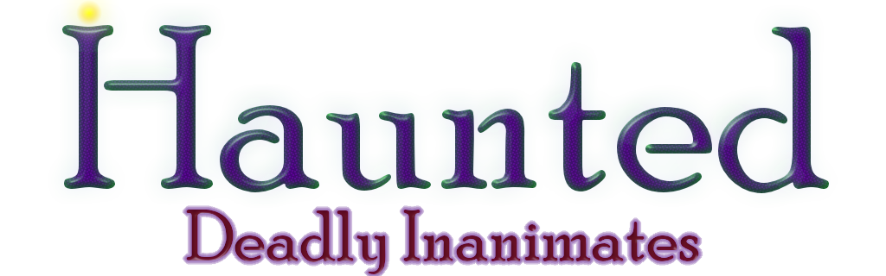

Welcome to the homepage of "Disc-O-Key"!
Disc-O-Key is Gur Ladizhinsky (20) and Dan Zander (19). We've been making free games in our free time since 2014. We enjoy making games, and hope you have fun playing them!Latest news:
Frogman Magmaborn's trailer is out!
The trailer for our latest game, Frogman Magmaborn, is out!
Frogman Magmaborn is our latest game - a free and open-source rogue-like tactical RPG, coming in 2022. Discover story and characters each run, battle in diverse hand-crafted maps, and edit everything with the dedicated modding tool!
Read more about it on our Steam page:
Once the game is ready, it will be published here and on Steam. Stay tuned!
Read more about it on our Steam page:
Once the game is ready, it will be published here and on Steam. Stay tuned!
Published on 05/02/2022
Latest games:
 



About us
Disc-O-Key was founded at the start of 2014, when we were 12, as three friends wanting to create games together. Our site was first published on 15th May 2014, alongside our first game - Boomby. We've steadily improved since then, and currently hoping to publish our first Steam game - Frogman Magmaborn.
Click here to read more about our current team.
Other important members who left:
Yotam Lev - One of the 3 original founders. Helped with the original site, but left before it was even published.
Matar Eliaz - Helped with our first collaborative game, Gravity Banana, but left shortly after it.
Nadav Tirosh-Warshai - Created our second site and playtested Gravity Banana: Part 1 and Crock.
Click here to read more about our current team.
Other important members who left:
Yotam Lev - One of the 3 original founders. Helped with the original site, but left before it was even published.
Matar Eliaz - Helped with our first collaborative game, Gravity Banana, but left shortly after it.
Nadav Tirosh-Warshai - Created our second site and playtested Gravity Banana: Part 1 and Crock.